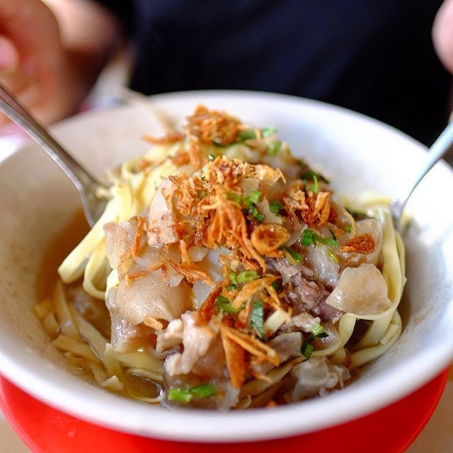
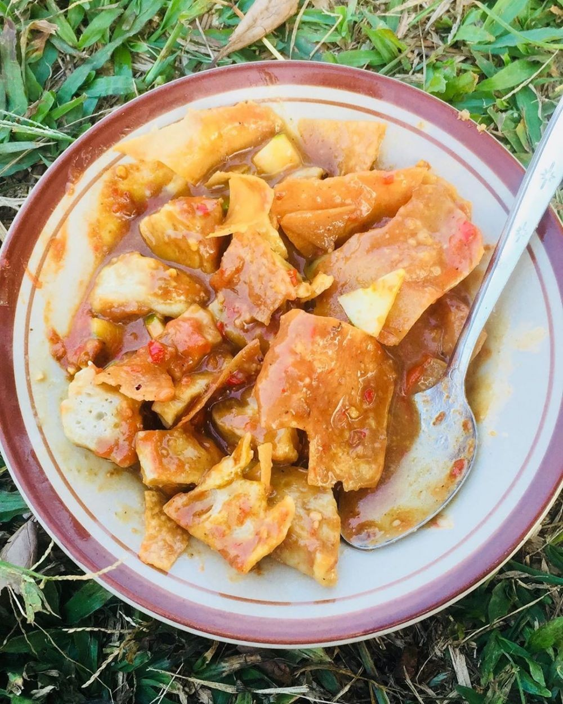
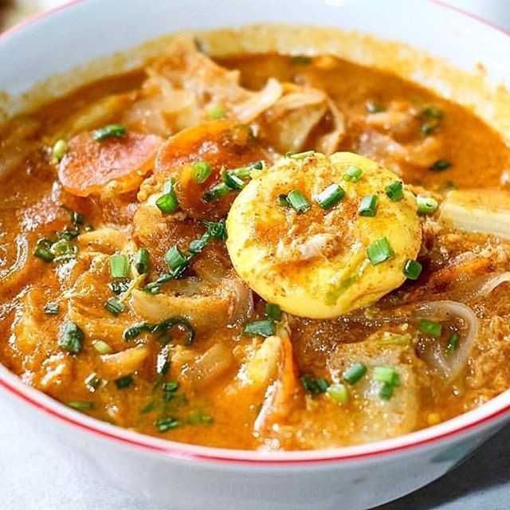
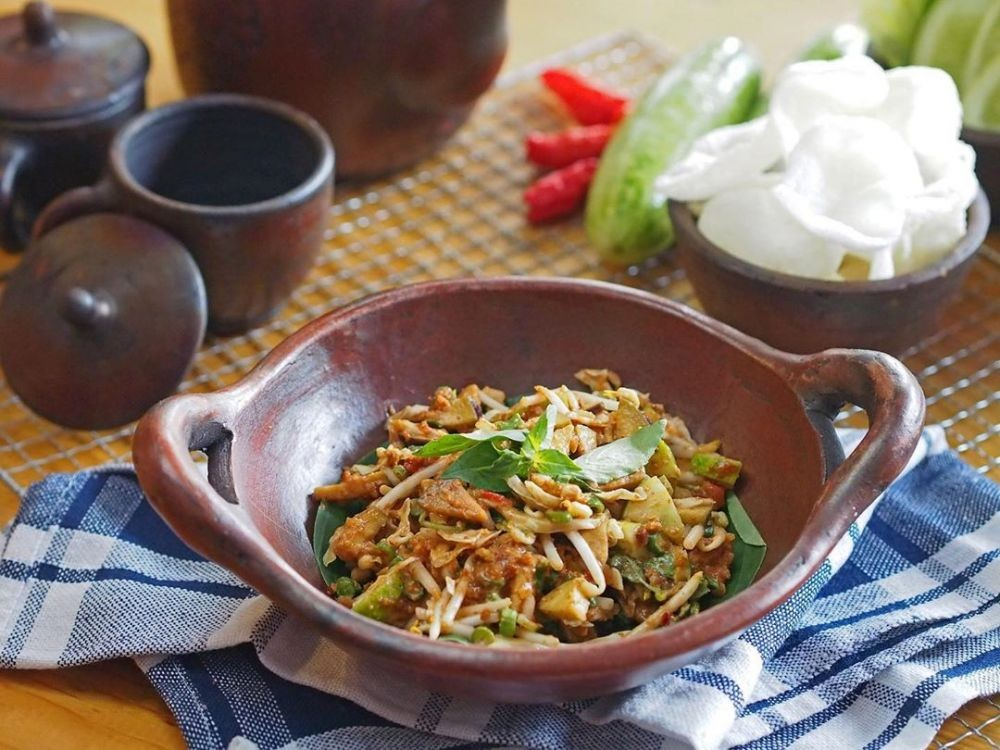
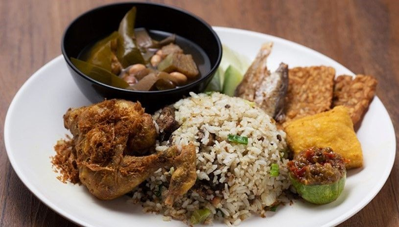

Terkenal dengan segudang destinasi wisatanya yang menarik, Kota Bandung juga memiliki kekayaan kuliner yang menggugah selera.
Bentuknya unik-unik dengan rasa yang menggoyang lidah.
Saking banyaknya, mungkin kita bingung makanan mana saja yang wajib kita cicipi duluan. Ya gak? Tenang, Admin bakalan kasih nih daftar
makanan khas Bandung yang enak dan paling populer, wajib untuk kamu coba jika sedang berkunjung ke Kota Bandung harus kamu jajal
kenikmatannya!

1. Mie Kocok
Pecinta makanan berkuah pasti suka mie kocok. Mie kuning gepeng ini dilengkapi potongan kikil, sum sum,
daun seledri, dan bawang goreng.

2. Batagor Bandung
Disajikan dengan bumbu kacang yang nikmat, batagor jadi salah satu makanan paling lezat di Bandung.
Isinya tahu goreng dan pangsit goreng.

3. Seblak
Seblak terbuat dari kerupuk basah, sayur, daging, dan telur. Rasa kuahnya sedap dan pedas yang khas.

4. Karedok
Cocok untuk diet, karedok berisi sayur-sayuran seperti taoge, kol, kacang panjang, dan mentimun.
Bumbu kacangnya nikmat banget.

5. Nasi Tutug Oncom
Nasi tutug oncom berupa nasi yang ditumbuk dan dicampur oncom. Disajikan dengan lauk, seperti ayam goreng,
tahu, dan tempe goreng.